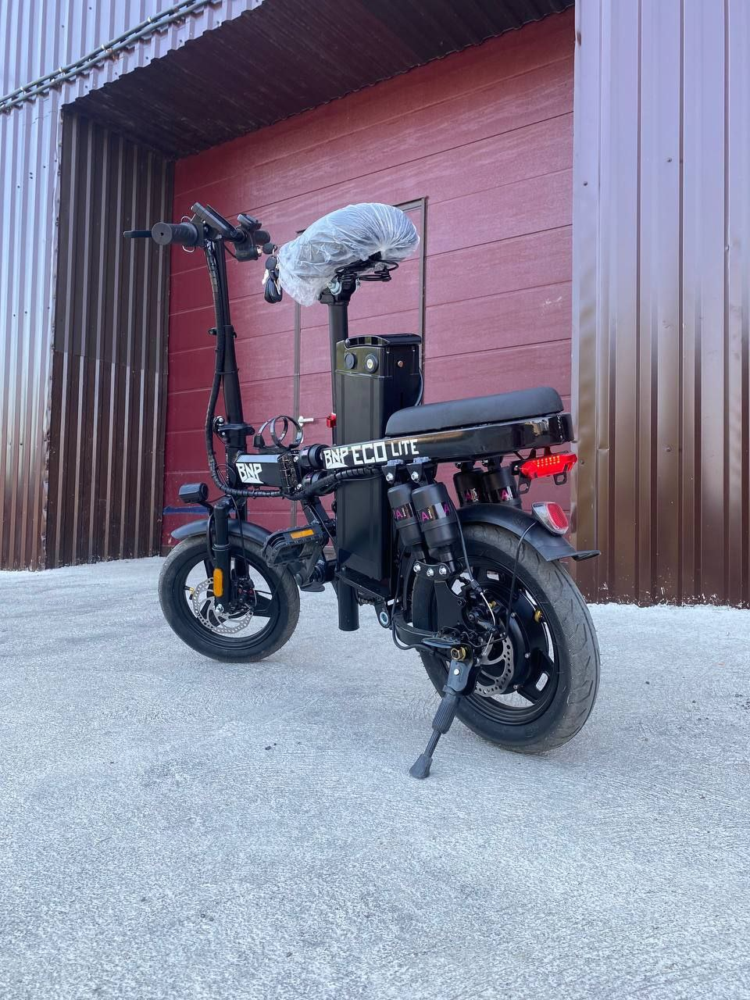
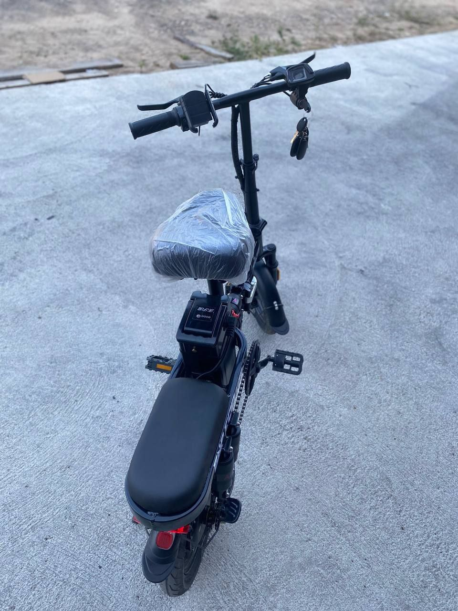
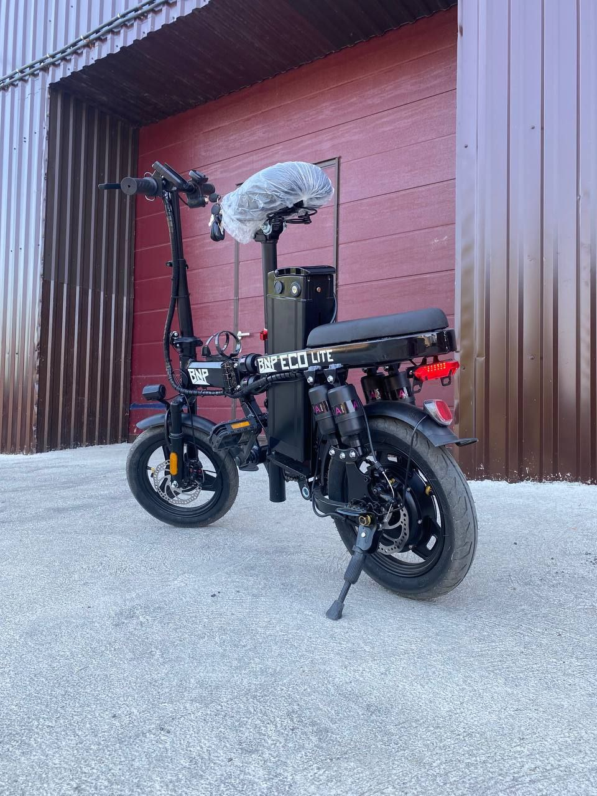
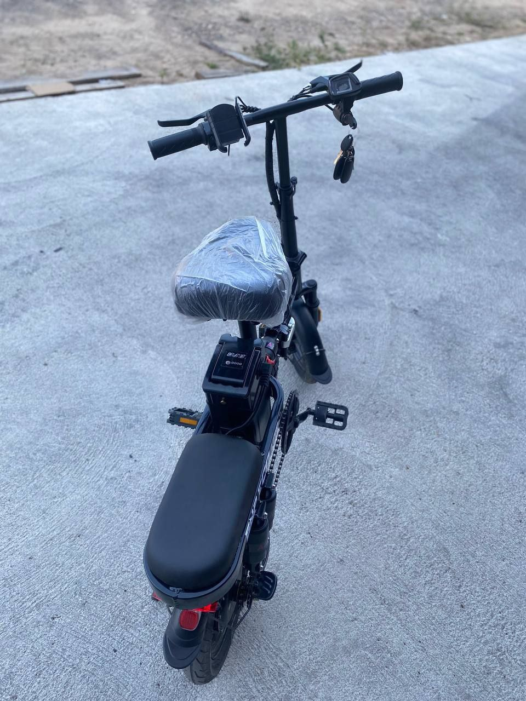

Электроскутер BNP Eco Lite
 



Электроскутер BNP Eco Lite. Складная конструкция позволяет не только экономить место при хранении, но также делает его удобным для транспортировки в автомобиле.
Стоимость: 3600 рублей
Через финансовых партнеров: от 86 руб. в месяц до пяти лет без предоплат и первых взносов с возможностью досрочного погашения.
Вариант рассрочки от нашей компании: 1440 руб. предоплата, оставшаяся сумма на 12 месяцев по 180 рублей.
Характеристики:
Максимальная скорость: до 35 км/ч
Мощность электромотора (бесщёточный): 400 W
Батарея быстросъемная: Напряжение 48V, Емкость 20Ah Li-on - долговечная и емкая.
Запас хода: до 70 км (в зависимости от нагрузки)
Допустимая нагрузка: 150 кг
Количество мест: 2
Размер колес: d=45 см
Размеры: Длина 135 см, ширина 72 см, высота 90 см
Тип подвески: пружинный амортизатор
Тормоза: Передний и задний дисковый вакуумный тормоза - надежная система торможения для безопасности во время движенияа
Освещение: ходовые огни, указатели поворотнииов
Противоугонная сигнализация: Штатная с двумя брелок-ключами
Дополнительный педальный привод
Дисплей